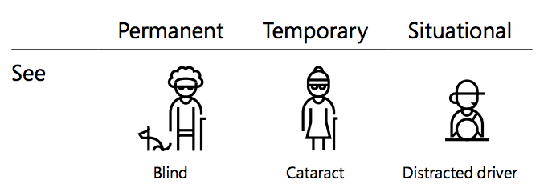
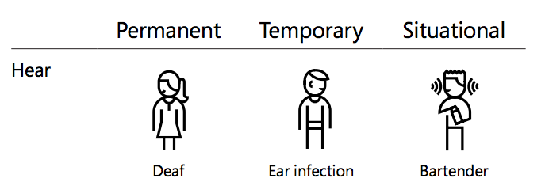
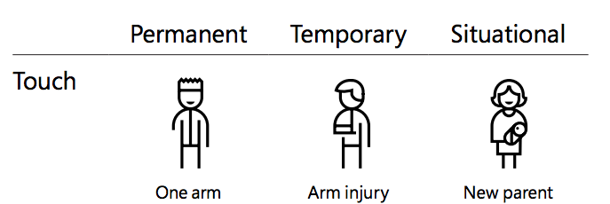
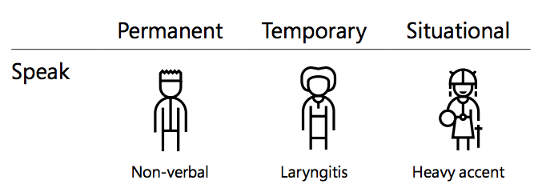

Accessibility
The Basics & Beyond
it me
- Brian Sinclair (
@brianarn) - Sr. Software Engineer, DigitalOcean
- Accessibility retrofitter
- Not perfect
Agenda
TBD
What is accessibility anyways?
Accessibility
Often abbreviated as a11y
All about making accomodations for varying degrees of ability/disability
Why do we do this?
It's THE LAW
Sorta
Anti-Discrimination Acts
- USA: Americans with Disabilities Act of 1990
- Canada: Accessibility for Ontarians with Disabilities Act, 2005
- UK: Disability Discrimination Act 2005 / Equality Act 2010
- EU: Charter of Fundamental Rights of the European Union
- United Nations: Convention on the Rights of Persons with Disabilities
Accessibility is Empathy
We make websites and apps for people
People are worth caring for
Videos!
Inclusive Design
Courtesy Microsoft's Inclusive Design
   Benefits of Accessibility
Improved UX
Better accessibility helps everyone
Improved SEO
The better your content can be read by screen readers, the better search engines can read it
How do we know?
Principles & Guidelines
POUR
WCAG 2.0
Principles
Principles: POUR
- Perceivable
- Operable
- Understandable
- Robust
Perceivable
Can everyone consume this content?
Operable
Can everyone use this content or application?
Understandable
Does this even make sense?
Robust
Can it be used in a broad variety of environments?
Guidelines
Guidelines: WCAG 2.0
Web Content Accessibility Guidelines
POUR codified into rule sets
WCAG Levels
- A
- AA
- AAA
Where should we be?
- Who has two thumbs up? AAyyy!
WCAG quickref
WCAG in Depth
Perceivable
1.1: Text Alternatives
- 1.1.1: Non-text Content (A)
1.2: Time-based media
- 1.2.2: Caption (Prerecorded) (A)
- 1.2.4: Captions (Live) (AA)
- 1.2.6: Sign Language (Prerecorded) (AAA)
1.3: Adaptable
- 1.3.1: Info and Relationships (A)
- 1.3.2: Meaningful Sequence (A)
- 1.3.3: Sensory Characteristics (A)
1.4: Distinguishable
- 1.4.1: Use of Color (A)
- 1.4.3: Contrast (Minimum) (AA)
- 1.4.4: Resize Text (AA)
- 1.4.6: Contrast (Enhanced) (AAA)
- 1.4.9: Images of Text (No Exception) (AAA)